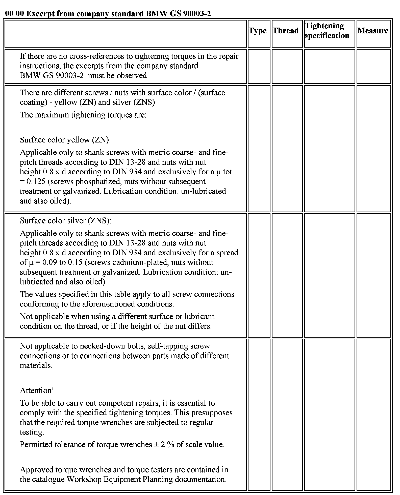

00 00 Excerpt From Company Standard BMW GS 90003-2

00 00 ... M4 and M5 - Maximum Tightening Torques Acc. to BMW GS 90003-2
00 00 ... M6 and M7 - Maximum Tightening Torques Acc. to BMW GS 90003-2
00 00 ... M8 and M8 x 1 - Maximum Tightening Torques Acc. to BMW GS 90003-2
00 00 ... M10 and M10 x 1 - Maximum Tightening Torques Acc. to BMW GS 90003-2
00 00 ... M12 and M12x1.5 - Maximum Tightening Torques Acc. to BMW GS 90003-2
00 00 ... M14 and M14x1.5 - Maximum Tightening Torques Acc. to BMW GS 90003-2
00 00 ... M16 and M16x1.5 - Maximum Tightening Torques Acc. to BMW GS 90003-2
00 00 ... M18 and M18x1.5 - Maximum Tightening Torques Acc. to BMW GS 90003-2